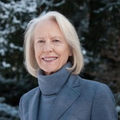

Harvard University
65 people whose festival biography mentions Harvard University. A mention can mean a job, a past job, a grant, a broadcast or an award: read the bio for which.
 Theodore FrankPanelist, festival team, workshop leader · 7 editions, 2017–2025Arnold & Porter Kaye Scholer (retired partner)
Theodore FrankPanelist, festival team, workshop leader · 7 editions, 2017–2025Arnold & Porter Kaye Scholer (retired partner) Natalie Bullock BrownPanelist, moderator · 6 editions, 2019–2026Documentary Accountability Working Group
Natalie Bullock BrownPanelist, moderator · 6 editions, 2019–2026Documentary Accountability Working Group
 Sig LibowitzModerator, panelist, workshop leader · 3 editions, 2024–2026JHU AAP Graduate Film and Media Program
Sig LibowitzModerator, panelist, workshop leader · 3 editions, 2024–2026JHU AAP Graduate Film and Media Program Judith MatloffPanelist, workshop leader · 3 editions, 2017–2024Columbia Graduate School of Journalism
Judith MatloffPanelist, workshop leader · 3 editions, 2017–2024Columbia Graduate School of Journalism- Laura BlumenfeldModerator · 2 editions, 2018–2024

 Bonnie R. CohenFestival team · 2 editions, 2024–2025
Bonnie R. CohenFestival team · 2 editions, 2024–2025 Ronnie GreeneModerator · 2 editions, 2024–2025
Ronnie GreeneModerator · 2 editions, 2024–2025 Laurent RichardPanelist, workshop leader · 2 editions, 2018–2021
Laurent RichardPanelist, workshop leader · 2 editions, 2018–2021
 Victoria BaranetskyPanelist · 2021
Victoria BaranetskyPanelist · 2021


 Farai ChideyaPanelist · 2021
Farai ChideyaPanelist · 2021 David CowanPanelist · 2021
David CowanPanelist · 2021 Letrell CrittendenPanelist · 2021
Letrell CrittendenPanelist · 2021- George FramptonPanelist · 2018
 Atul GawandePanelist, filmmaker · 2025
Atul GawandePanelist, filmmaker · 2025 Robert GutierrezPanelist · 2023
Robert GutierrezPanelist · 2023- Mark Lee HunterPanelist · 2020
- Suki KimPanelist · 2017

 Jennifer 8. LeePanelist · 2021
Jennifer 8. LeePanelist · 2021- Robert MaguirePanelist · 2018
 Swapneel MehtaPanelist · 2026
Swapneel MehtaPanelist · 2026- Tom MuellerModerator · 2019
- Francesca PanettaPanelist · 2015
 Enrique Pedráza-BoteroPanelist, filmmaker · 2025
Enrique Pedráza-BoteroPanelist, filmmaker · 2025- Nonny de la PeñaPanelist · 2015
- Maxim PozdorovkinFilmmaker, panelist · 2018
 Claudio Sanchez2021
Claudio Sanchez2021 Jeremiah SchofieldPanelist · 2026
Jeremiah SchofieldPanelist · 2026- Amy SchwartzModerator · 2024

 Charles M. SennottPanelist · 2021
Charles M. SennottPanelist · 2021 Meg ShutzerFilmmaker, panelist · 2022
Meg ShutzerFilmmaker, panelist · 2022 Joe StephensPanelist · 2021
Joe StephensPanelist · 2021
Flo StoneFestival team · 2015 Seth StoughtonPanelist · 2025
Seth StoughtonPanelist · 2025